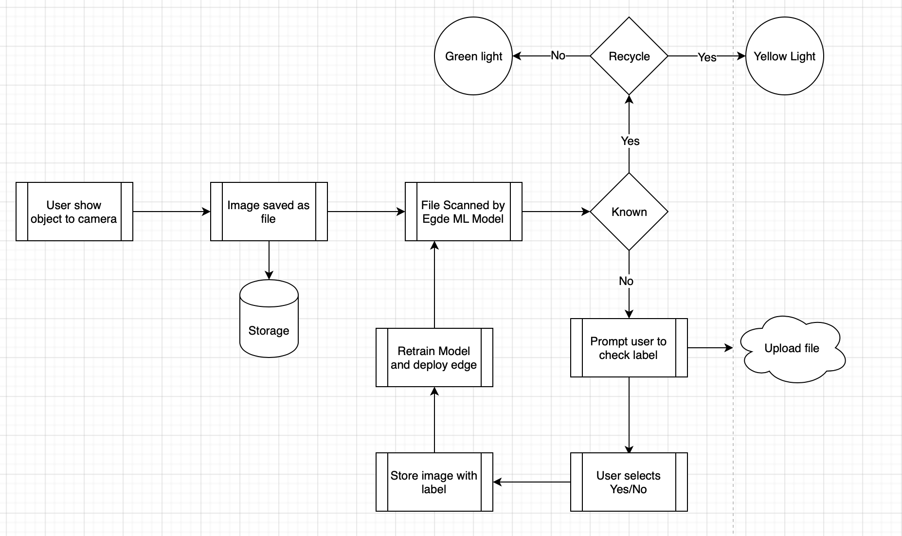
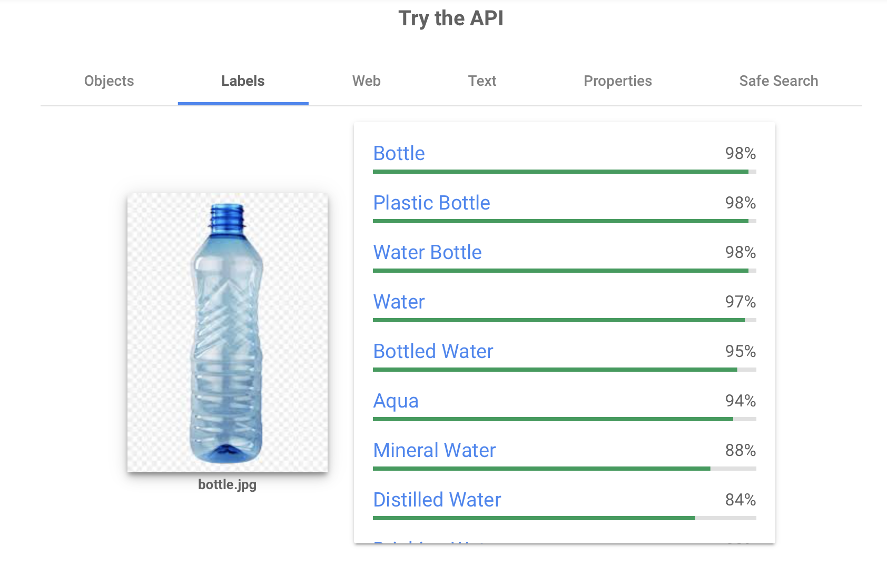

Project Idea
My project idea is to create a system to assist people with
identifying which bin to use in the household. The system will allow
a user to hold up an object to a camera, which will then show an
output determining which bin it should be put in.
It will be
simple to use with a visual indicator that matches to the bin that
should be used for that particular type of waste. For unknown waste
types, it should allow the user to input based on their knowledge.
With enough people using the system, it will improve its learning
via this feedback loop to give 90%+ accuracy.
The motivation for this is that councils are cracking down on waste
being put into the wrong bin. A recent article in the West
Australian discusses how local councils are signing up to a waste
tagging scheme which could result in uncollected bins for
non-compliant residents
"Households
that are cross-contaminating by not putting the accepted items in
the right bins, such as food scraps into the recycling, are being
shamed with stickers of an unhappy face for non-compliance and
risk their bins being taped up and uncollected." [5]
The product will run on a Raspberry Pi with a camera attached to the
header. The user then shows the camera the item they are unsure
about which bin it should go in.
The system would take a
picture of the item shown, submit this to a trained machine-learning
model locally, which would return a result of which bin to place it
into with a confidence level. The reason for using a local
machine-learning model is to reduce the latency of the response and
therefore improve the user experience.
If the confidence
level is above 90% then it can provide a visual indication to the
user via a coloured LED that corresponds with the colour of the bin
lid.
This does, rely on the user to place the item in the
correct bin; however, this reduces the requirement for an automated
sorting system which would require further mechanical engineering to
put the item in the correct bin. This would be likely
over-engineering the solution, adding additional cost and complexity
without any significant benefit.
If the confidence level is
below the threshold, then it can indicate to the user that they need
to check the packaging and decide, informing the system of the
decision with a button press or similar.
This would then
store the image and the correct tag. This can then be fed back into
the ML model to retrain and improve the accuracy of this model. With
multiple households using this system, it will increase the accuracy
of this device through a larger dataset on which to learn.
The system would need to check for daily updates, polling a central
system, to see if there were any updates available to either its
application files or to the model itself. If there is, then these
would need to be pulled down. An initial workflow is shown below of
the operation of the system where a yellow bin is used for recycling
and a green bin is for household waste;

This diagram shows the steps that would be taken by
the user and how the information would flow through the system.
Retraining of the model is key initially to create a model that is
accurate enough to be reliable. An initial pilot would be required
to assist with improving the model confidence level prior to any
large scale roll out.
Using low-cost Raspberry Pi technology and machine-learning this
will allow a low-cost system to be deployed into the home, with the
potential to be co-funded by the local council as a green
initiative.
Tensorflow is an open-source ML framework that
can be used and also includes TFLite, which allows an edge version
of the created model to be run on a tool, such as a Raspberry Pi or
a mobile phone. Cloud can be leveraged to allow rapid model
iteration at a low cost with edge models deployed to the Raspberry
Pi for inference. Using hardware such as the Raspberry Pi Zero is
low cost, includes wifi and can have a camera added for under $100
AUD.
To achieve a rapid time to value, pre-trained APIs,
like the Google Cloud Vision API can be used for label detection, an
example of the label detection capability is below;
 [6]
This information can be fed through initially a rules engine, then
developed with tools such as AutoML
(https://cloud.google.com/automl/) to use custom tags to build a
custom model for increased accuracy.
To implement the project, it will require a programmer who has
experience with developing on Raspberry Pi to write the local
program. It will also require knowledge of TensorFlow and TensorFlow
lite frameworks. By utilising pre-trained models for labelling and
tools such as AutoML, that will build the ML model without ML
knowledge from labels, will assist with these requirements and allow
a programmer to focus on the initial MVP, rather than requiring a
Data Scientist. From a hardware perspective, the hardware is
available off the shelf, however, to make this aesthetically
pleasing it would be beneficial to 3D print a bespoke case
containing the Pi, Camera and LED.
As the skills required
are reasonably generic, and not language-specific, they will likely
be readily available in the Australian market.
The original problem was people don’t always understand what they
should do with their waste. This device helps them make informed
choices about how they dispose of their waste, whether landfill or
recycling. Education of the user is key and this device will assist
in that.
If the project is successful, the outcome will be
an improved rate of recycling. The 2018 Australian national Waste
Report shows that in 2016-2017, 67 million tonnes of waste was
generated, with 37 million tonnes recycled, approximately 55%.[7] The usage of this device could
significantly improve that number by reducing the contamination of
recycled waste and also the amount of waste sent to landfill.